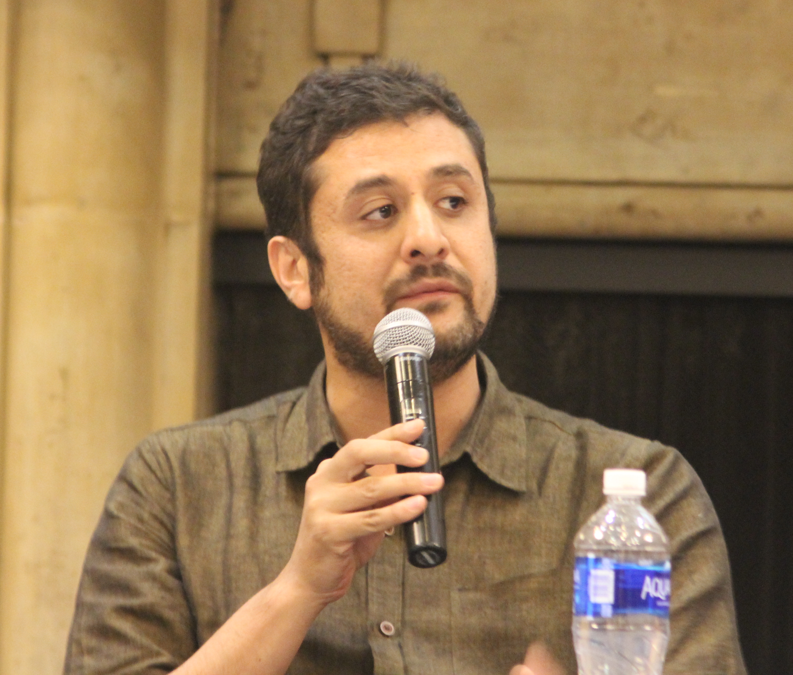
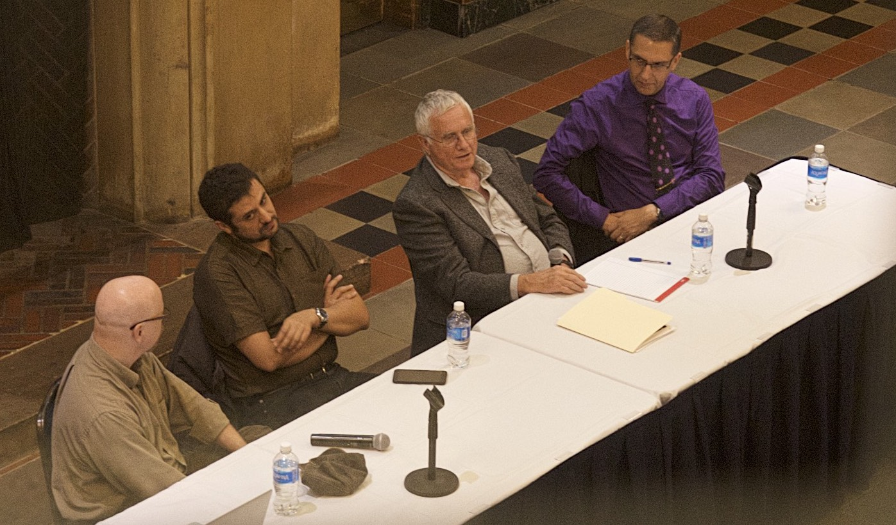
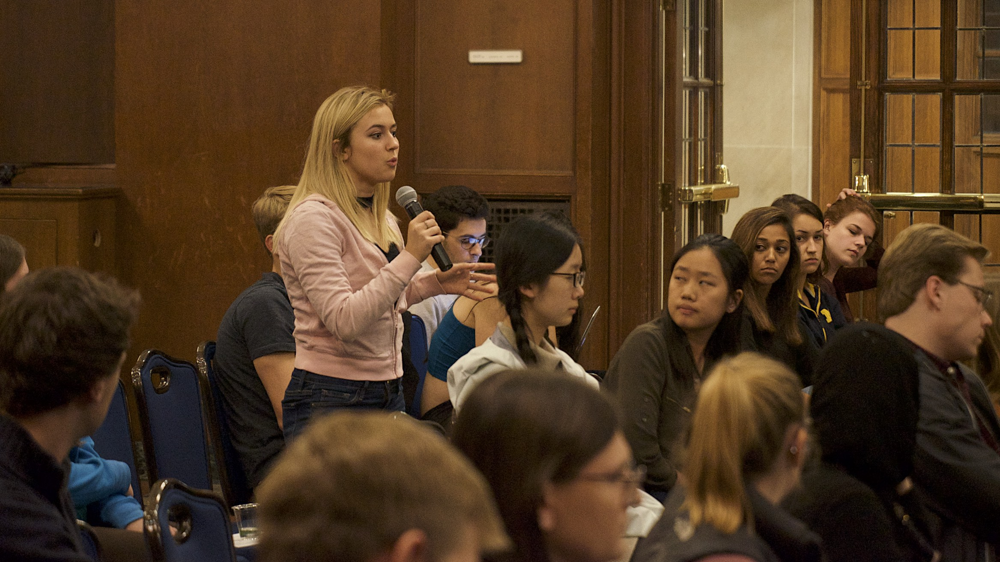
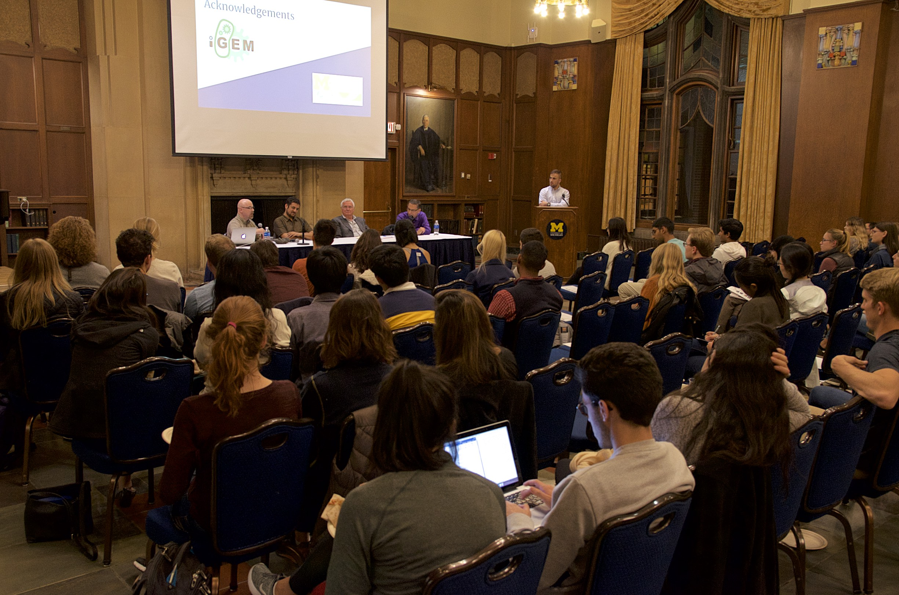

Team Michigan: Education and Public Engagement
Hosting a Panel

MSBT’s public education and engagement focused on fostering a discussion on how synthetic biology plays a role in our daily lives, and how it may play an increasing role in the future. We created this event to address the applications and safety implications of genetically modified organisms (GMOs). On the University of Michigan campus, MSBT hosted a panel discussion open to the public, featuring four panelists that are University of Michigan professors who have extensive research backgrounds in diverse fields relating to GMOs. The event took place on October 19th, 2017 and had over 50 attendants. By creating a space for discussion with professionals knowledgeable in the field, we were able to engage the local community where they were able to ask questions and guide the discussion of the panel.
The panel was moderated by a member of our team and featured four faculty members who brought a variety of perspectives to the table. We researched the faculty members’ prior work and experience and drafted questions for the panelists in collaboration with them. The featured faculty members were:
Steven Clark:
Professor Clark is a plant molecular biologist and Professor in the Department of Molecular, Cellular, and Developmental Biology. He provided insights from the perspective of research, being a researcher and plant geneticist himself.
Julian Adams:
Professor Adams is a Professor Emeritus in Ecology and Evolutionary Biology and the Dept. of Molecular, Cellular, and Developmental Biology. He provided insights from the perspective of regulation, research and scientific funding decisions. For many years he worked for (USAID) and often provided past examples of how GMOs were properly regulated in terms of government and policy.
Brian Zikmund-Fisher:
Professor Fisher is an Associate Professor of Health Behavior and Health Education in the School of Public Health as well as a Research Associate Professor of Internal Medicine. His research interests involve studying factors that affect individual decision-making about a variety of health and medical issues, notably consumer decisions related to GMOs. He provided insights from the perspective of social science.

Aniket Aga:
Dr. Aga, PhD., is a professor in the School for Environment and Sustainability at the University of Michigan. Dr. Aga's dissertation research focused on the ongoing debate over Genetically Modified (GM) crops in particular food crops in India in order to analyze the relationship between science and politics in the world’s largest democracy. He provided insights in agriculture and the implications GMO crops have for farmers.

Dr. Stevens was able to bring technical information regarding plant biology to the discussion, which was expounded upon by Dr. Adams, whose experience in GMO regulation provided insight into the practical application of said technologies. Dr. Adams’ work in setting up the framework for field tests of biotechnology crops for the United States Agency for International Development was contrasted by the larger anthropological implications which Dr. Aga has studied. Such discussion drew some tension between the two professors, eliciting an incredibly nuanced discussion on GMO use in developed and underdeveloped nations, as well as the current culture of biological sciences. Finally, Dr. Zikmund-Fisher, a social scientist who studies decision making and risk assessment by the public, was able to provide a consumer perspective to the discussions, explaining the factors that go into marketing and purchases.
Each of these panelists brought a different perspective to the debate about the risks of genetic engineering and specific applications for which organisms can be tailored. In asking professors whether they would be willing to discuss the topic, we considered how to best integrate their different experiences and skill sets. We did not want to assume audience members had much prior knowledge of genetic modification but we wanted to insure that the questions were specific, accurate, and relevant to the current state of GM technology. The panelists were asked questions that initiated conversations regarding the classification of genetically modified techniques and their products, the use of genetically modified organisms in agriculture, and public response to and decision-making regarding GM products. Much of the discussion proceeded organically, covering topics and concepts that we had not considered.

Over 50 students and Ann Arbor residents attended, and several asked questions at the end of the panel. We hope our panel sparked further interest in genetically modified organisms and the ways people can interact with the scientists and policy makers that design the applications of and safety regulations for genetically modified organisms.

Appearing on a Podcast
As we progressed in our design, funding was a major concern in order to get the supplies we needed to finish our research on our temperature-controlled killswitch. Bosch Young Investigators in Australia discovered our funding campaign and was curious to learn more about crowdsourced science. Members of our team joined the Peer Review podcast to discuss crowdfunding resources and how this method can apply to science teams that require alternate forms of funding to complete their research.
As we progressed in our design, funding was a major part in getting the supplies we need to finish our research on our temperature-controlled killswitch. A main avenue for this was Experiment.com, which caught the attention of Bosch Young Investigators in Australia. Members of our team joined the “Peer Review” podcast, created by Daisy Y. Shu, Ph.D candidate at the University of Sydney, Australia. We discussed:
- Crowdfunding resources and how it can apply to science teams that aren’t able to obtain the funds necessary to complete research.
- How Experiment.com and other crowdfunding sites allow us to reach out to the public, provide a clear and concise description of our research.
- How we attempt to provide knowledge of our research from beginning to end rather than just receiving donations and never publishing our results for those donors.
We recommend iGEM teams that participate in crowdfunding for their projects to listen to this podcast as we provide useful tips and lessons we learned.
Authoring a Children's Book
Our goal was to introduce the concept of genetics without getting into all the nitty-gritty details that can push children away from biology. In an effort to catch the interest youths in synthetic biology, we decided to write a children’s book as a basic introduction to biology. Our story, The Aquatic Adventures of Bobby the Bacteria, begins with a small bacterium that contains a fluorescence plasmid, questioning why he is so different from the other bacteria in class. With advice from his mother, he soon finds out how his DNA makes him unique, and that being different can be a great thing.
Addressing people of all ages, we were able to provide a fun, engaging introduction to the growing field of synthetic biology to future scientists. Our children’s book, entitled “The Aquatic Adventures of Bobby the Bacteria” was written with the intention of reaching a younger demographic. Basic synthetic biological concepts, such as DNA and genetics, were integrated into the writing to showcase the utility of plasmids, and introduce the many possibilities for exploration afforded by a science-rich education.
Anh Duong Dinh, the illustrator who provided her work for the children’s book, was moved by our efforts and was happy to contribute her skills to help educate her skills to cultivate young scientists. Her work provides colorful and eye-catching pictures that clearly illustrated the fundamentals of biology.
We read the book at the Impression 5 Museum in Lansing and at Peace Neighborhood. The book is a fun and engaging way to familiarize kids with biological concepts that they will build upon as they progress through their education.
Writing this book was quite a challenge, but incredibly fun to write.It was an amazing and inspiring experience for other iGEM teams to try writing a book. Perhaps an iGEM book series would be in order.
Steps:
We decided on a main storyline first, modeling the central theme after Rudolf the Red-Nosed Reindeer and Dumbo. After cementing the central story beats, we started drafting verses and rhymes. We then proceeded to plan out a storyboard and sent the drafts to our illustrator.
Our wonderful friend Anh Duong Dinh helped us bring this work to life. See more of her amazing art on instagram @hollowram.
Look out for our book at the conference!
Story Time at the Museum
In order to engage a younger generation of future scientists in problem-solving through biology, we held an event at a children’s science museum. We constructed a series of activities designed to engage the children in thinking about DNA and how it orders biological processes in the body, and how synthetic biology can be a tool for problem-solving. These activities included making plasmid bracelets, designing/drawing bacteria, creating DNA necklaces, reading our book, brainstorming genetic engineering projects, and learning about paper-based tests and applications.This event took place on November 4th, 2017, therefore we were not able to upload any pictures to our wiki but look out for them on our presentation!
As a team, we are captivated by the ways synthetic biological constructs can be made from simple parts for extremely complex applications. After creating the children’s book we had the idea of expanding into more interactive teaching events in order to familiarize children with basic biological concepts that they will build upon as they continue their science education, and to transmit our, we hosted an event at the Impression 5 Science Center in Lansing. We designed various activities to help kids to learn about DNA and identify problems they could creatively solve. We wanted to create an event that would get them excited and thinking about how they could combine different systems and activities to solve problems. The activities we constructed included:
- Constructing “plasmid” bracelets as a take-home to remind the kids about their genetic construct.
- Designing and drawing super bacteria with “powers” activated by switches, similar to designing a plasmid.
- Isolating strawberry DNA and creating a necklace as a take-home reminder.
- Story time, where we read “The Aquatic Adventures of Bobby the Bacteria”.
- Writing down “Future” iGEM projects, such as problems or solutions in the world that they want to solve through synthetic biology.
- pH and litmus paper demonstration to help them understand paper based identification tests and other applications (in relation to our team’s AptaPaper project from last year)